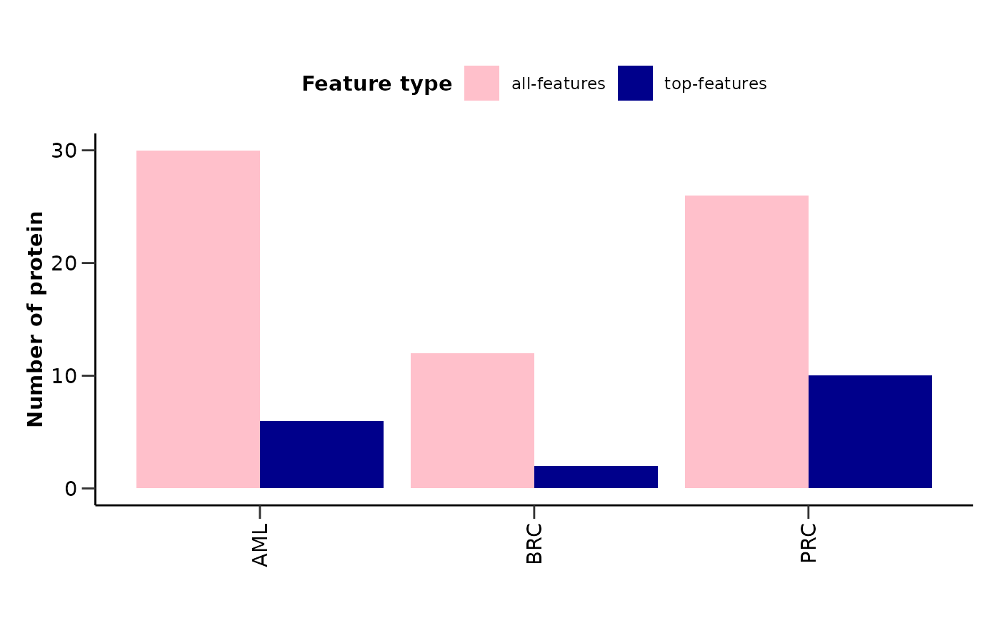
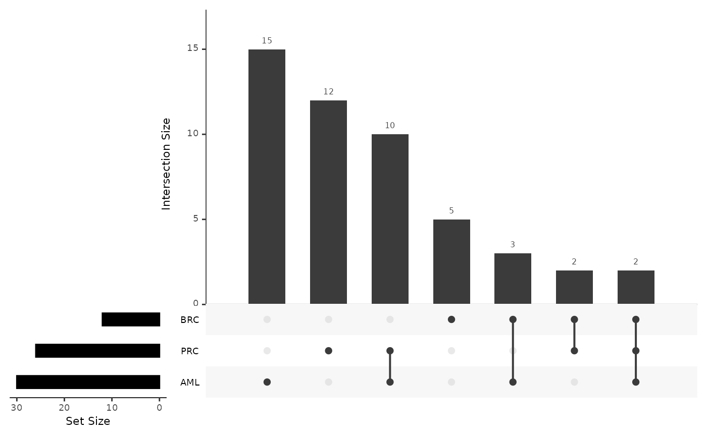
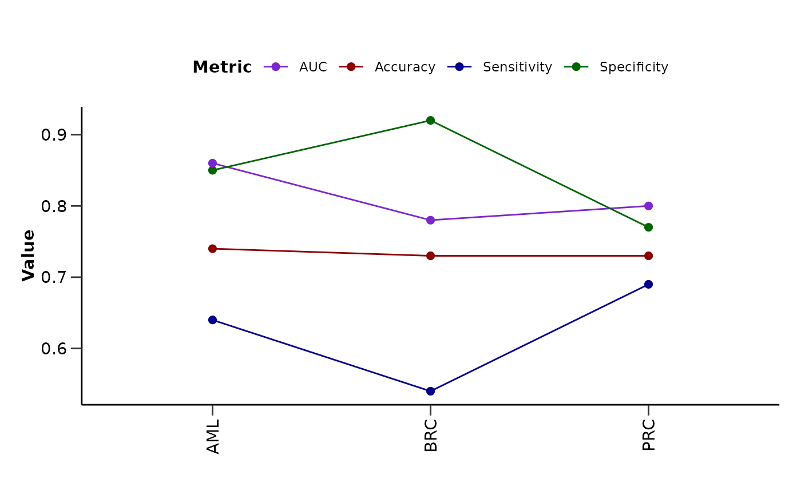

plot_features_summary() plots the number of proteins and the number of top
proteins for each disease in a barplot. It also plots the upset plot of the
top or all protein features, as well as a summary line plot of the model
performance metrics.
Usage
plot_features_summary(
ml_results,
importance = 50,
upset_top_features = FALSE,
case_palette = NULL,
feature_type_palette = c(`all-features` = "pink", `top-features` = "darkblue")
)Arguments
- ml_results
- importance
Importance threshold for top features. Default is 50.
- upset_top_features
Whether to plot the upset plot for the top features. Default is FALSE.
- case_palette
The color palette for the plot. If it is a character, it should be one of the palettes from
get_hpa_palettes(). Default is NULL.- feature_type_palette
The color palette for the plot. If it is a character, it should be one of the palettes from
get_hpa_palettes(). Default is "all-features" = "pink" and "top-features" = "darkblue".
Value
A list with two elements:
features_barplot: Barplot of the number of proteins and top proteins for each disease.
upset_plot_features: Upset plot of the top or all proteins.
metrics_barplot: Barplot of the model metrics for each disease.
features_df: A tibble with the proteins for each combination of cases.
features_list: A list with the proteins for each combination of cases.
Examples
# Run the elastic net model pipeline for 3 different cases
res_aml <- do_rreg(example_data,
example_metadata,
case = "AML",
control = c("BRC", "PRC"),
wide = FALSE,
only_female = "BRC",
only_male = "PRC",
cv_sets = 2,
grid_size = 1,
ncores = 1)
#> Joining with `by = join_by(DAid)`
#> Sets and groups are ready. Model fitting is starting...
#> Classification model for AML as case is starting...
#> Warning: Due to the small size of the grid, a Latin hypercube design will be used.
res_brc <- do_rreg(example_data,
example_metadata,
case = "BRC",
control = c("BRC", "AML"),
wide = FALSE,
only_female = "BRC",
only_male = "PRC",
cv_sets = 2,
grid_size = 1,
ncores = 1)
#> Joining with `by = join_by(DAid)`
#> Sets and groups are ready. Model fitting is starting...
#> Classification model for BRC as case is starting...
#> Warning: Due to the small size of the grid, a Latin hypercube design will be used.
res_prc <- do_rreg(example_data,
example_metadata,
case = "PRC",
control = c("BRC", "AML"),
wide = FALSE,
only_female = "BRC",
only_male = "PRC",
cv_sets = 2,
grid_size = 1,
ncores = 1)
#> Joining with `by = join_by(DAid)`
#> Sets and groups are ready. Model fitting is starting...
#> Classification model for PRC as case is starting...
#> Warning: Due to the small size of the grid, a Latin hypercube design will be used.
# Combine the results
res <- list("AML" = res_aml,
"BRC" = res_brc,
"PRC" = res_prc)
# Plot features summary visualizations
plot_features_summary(res)
#> $`AML&PRC`
#> [1] "ADGRG1" "APEX1" "ALDH1A1" "ADM" "ADA" "ANGPT1" "AHSP"
#> [8] "ALPP" "ACP6" "ADGRE2" "ATP6AP2" "AIF1"
#>
#> $`AML&BRC`
#> [1] "ADGRG2" "ADA" "ANGPT1" "ACTA2" "B4GALT1"
#>
#> $AML
#> [1] ADGRG1 APEX1 ADGRG2 ALDH1A1 ADM ANXA11 ADA ANGPT1 AHCY
#> [10] AGR3 ARNT ARID4B AHSP AGER ACTA2 ADAMTS8 ALPP ACP6
#> [19] AGR2 ANXA5 AOC1 ADGRE2 ATF2 ANGPTL1 ABL1 B4GALT1 APBB1IP
#> [28] ATP6AP2 AIF1 ALDH3A1
#> 100 Levels: AARSD1 ACAA1 ACAN ACE2 ACOX1 ACP5 ACTN4 ACY1 ADA2 ADAM15 ... ADGRG1
#>
#> $`AML&BRC&PRC`
#> [1] "ADA" "ANGPT1"
#>
#> $BRC
#> [1] ADA ANGPT1 ADGRG2 ANGPTL2 ADAMTS13 ACTA2 AMIGO2 B4GALT1
#> [9] ANGPT2 ADAMTS15 ATP6V1D ACTN4
#> 100 Levels: AARSD1 ABL1 ACAA1 ACAN ACE2 ACOX1 ACP5 ACP6 ACY1 ADA2 ... ADA
#>
#> $`BRC&PRC`
#> [1] "ADA" "ANGPT1" "AMIGO2" "ANGPT2"
#>
#> $PRC
#> [1] APEX1 ALPP ADM ANGPT1 ALDH1A1 ACP6 ATP6AP2 AMBN ADA
#> [10] AMIGO2 ACAN ANGPTL4 ADGRE5 AIF1 APOM ANGPT2 ADGRG1 ADGRE2
#> [19] ATOX1 ADH4 ANGPTL7 AZU1 APLP1 AHSP ATP5PO ALCAM
#> 100 Levels: AARSD1 ABL1 ACAA1 ACE2 ACOX1 ACP5 ACTA2 ACTN4 ACY1 ADA2 ... APEX1
#>
#> $features_barplot

#>
#> $upset_plot_features

#>
#> $metrics_lineplot

#>
#> $features_df
#> # A tibble: 49 × 3
#> `Shared in` `up/down` Assay
#> <chr> <chr> <chr>
#> 1 AML up ABL1
#> 2 PRC up ACAN
#> 3 AML&PRC up ACP6
#> 4 AML&BRC up ACTA2
#> 5 BRC up ACTN4
#> 6 AML&BRC&PRC up ADA
#> 7 BRC up ADAMTS13
#> 8 BRC up ADAMTS15
#> 9 AML up ADAMTS8
#> 10 AML&PRC up ADGRE2
#> # ℹ 39 more rows
#>
#> $features_list
#> $features_list$`AML&PRC`
#> [1] "ADGRG1" "APEX1" "ALDH1A1" "ADM" "ADA" "ANGPT1" "AHSP"
#> [8] "ALPP" "ACP6" "ADGRE2" "ATP6AP2" "AIF1"
#>
#> $features_list$`AML&BRC`
#> [1] "ADGRG2" "ADA" "ANGPT1" "ACTA2" "B4GALT1"
#>
#> $features_list$AML
#> [1] ADGRG1 APEX1 ADGRG2 ALDH1A1 ADM ANXA11 ADA ANGPT1 AHCY
#> [10] AGR3 ARNT ARID4B AHSP AGER ACTA2 ADAMTS8 ALPP ACP6
#> [19] AGR2 ANXA5 AOC1 ADGRE2 ATF2 ANGPTL1 ABL1 B4GALT1 APBB1IP
#> [28] ATP6AP2 AIF1 ALDH3A1
#> 100 Levels: AARSD1 ACAA1 ACAN ACE2 ACOX1 ACP5 ACTN4 ACY1 ADA2 ADAM15 ... ADGRG1
#>
#> $features_list$`AML&BRC&PRC`
#> [1] "ADA" "ANGPT1"
#>
#> $features_list$BRC
#> [1] ADA ANGPT1 ADGRG2 ANGPTL2 ADAMTS13 ACTA2 AMIGO2 B4GALT1
#> [9] ANGPT2 ADAMTS15 ATP6V1D ACTN4
#> 100 Levels: AARSD1 ABL1 ACAA1 ACAN ACE2 ACOX1 ACP5 ACP6 ACY1 ADA2 ... ADA
#>
#> $features_list$`BRC&PRC`
#> [1] "ADA" "ANGPT1" "AMIGO2" "ANGPT2"
#>
#> $features_list$PRC
#> [1] APEX1 ALPP ADM ANGPT1 ALDH1A1 ACP6 ATP6AP2 AMBN ADA
#> [10] AMIGO2 ACAN ANGPTL4 ADGRE5 AIF1 APOM ANGPT2 ADGRG1 ADGRE2
#> [19] ATOX1 ADH4 ANGPTL7 AZU1 APLP1 AHSP ATP5PO ALCAM
#> 100 Levels: AARSD1 ABL1 ACAA1 ACE2 ACOX1 ACP5 ACTA2 ACTN4 ACY1 ADA2 ... APEX1
#>
#>